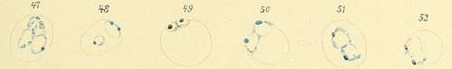
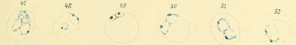

Special Characteristics Of The Individual Species Of Parasites. . Part 5
Description
This section is from the book "Malaria, Influenza And Dengue", by Julius Mennaberg and O. Leichtenstern. Also available from Amazon: Malaria, influenza and dengue.
Special Characteristics Of The Individual Species Of Parasites. . Part 5
Nor can I confirm another statement, made in the same paper, namely, that premature sporulation forms containing from five to ten spores are frequently seen in anticipating tertian.
If we apply Golgi's law to this not uncommon variety of tertian fever, we must assume that the tertian parasites may, under certain circumstances especially favorable to their development, reach maturity some hours earlier than usual, or thrive from the beginning with more vital energy so as to multiply sooner than in forty eight hours. As far as the number of spores and the size of the sporulation forms were concerned, I found no difference from the ordinary tertian. Still I do not intend by this to deny Bastianelli and Bignami's observation. On the contrary, I believe that this is worthy of attention and further investigation.
I know of no observations that have been made so far on the much rarer postponing tertian.
The structural relations in the development of the tertian parasite are shown in Plate VII.
2. Malarial Parasites that Sporulate and Form Syzygies.-To this group belong the small parasites investigated by Marchiafava and Celli. They are differentiated biologically from the parasites of the first group in that the latter show only direct sporulation, the former direct sporulation and crescent formation.
Clinically, these parasites produce a fever that relapses obstinately, leaves behind an anemia which is cured with difficulty, and gives rise to other pernicious phenomena.
The paroxysms often lack the fixed character of those occurring in the milder intermittent, and the chill especially may be wanting. The patients give throughout the impression of severe illness. They complain principally of prostration, pain in the limbs, headache, and loss of appetite.
In mild cases a more evident type is usually recognized. This may be quotidian or tertian (quartan does not occur), though again it may be distorted and difficult to analyze. Such continued and remittent fevers are produced by the rapid evolution of several generations of parasites.
Sporulation occurs almost exclusively in the internal organs, as pointed out by Marchiafava and Celli. The reason for this is so far entirely unknown. The relapse takes place eight to fourteen days after the previous paroxysm.
The Pigmented Quotidian Parasites
We have several times mentioned that we must thank the valuable work of Marchiafava and Celli for our knowledge of the small parasites occurring in pernicious fevers. Yet our division of these into pigmented and non pigmented is not in the sense of the Roman observers. They have always insisted that the pigmentation depends only on the duration of life, and that between them, therefore, there is no specific difference, while I believe that the division proposed by Grassi and Feletti into two species should be accepted, because a parasite that is always non pigmented was found by Grassi in birds, and the slightly pigmented parasites in certain birds have been recognized as a well defined species. Inoculation experiments in man similar to those mentioned for the quartan and tertian parasites have not yet been made with these two species. Moreover, we would not expect such experiments to give the clear results seen in the mild types, because mixed infection with the two species seems to be frequent. Finally, the circumstance that the pigmented forms may be wanting in the peripheral blood, while present in the internal organs, would add to the confusion.
The pigmented quotidian parasite describes its cycle of development in twenty four hours. It begins its existence, like all varieties, as a very small, non pigmented organism. After its escape as a spore it lives a short time in the plasma and then attaches itself to a red blood corpuscle.
These small organisms are actively ameboid, and it is this activity that attracts the attention of the observer. In general (as long as they do not go over into the ring form, with its condition of rest) they are optically so similar to the substance of the red blood corpuscle that they may easily be overlooked by the inexperienced. Their contour is very delicate, their color a little paler than that of the red blood corpuscle. Some of the organisms retain their activity under the microscope at room temperature for a considerable time, -an hour or even longer,-while others cease their motion soon after the removal of the blood (possibly even too in the circulating blood). When at rest, the organisms form very characteristic small rings, hyaline in appearance, with a red center, on account of which they are at once striking to the observer. Oftentimes the ring shows at one portion a small nodule, and then is appropriately compared to a signet ring. The ring not uncommonly contains one or several granules of a hemoglobin derived substance-viz., melanin, which it has drawn from the blood corpuscle.
Description Of Plate VI
A, Figs. 1 to 6. Pigmented quotidian parasites.
B, Figs. 7 to 13. Unpigmented quotidian parasites.
C, Figs. 14 to 19. Malignant tertian parasites.
D, Fig. 20. Brass colored erythrocytes. Figs. 21 to 37. Crescentic bodies.
Figs. 24 to 26. Fusion of two ameboid parasites (copulation). Fig. 27. Conjunction of two bodies.
Figs. 38 to 40. Stained crescents (by Romanowsky's method). Figs. 41 to 58. Stained parasites of the second group. Figs. 49 to 57. Formation of the crescents (conjunction of the bodies) (stained with hematoxylin after fixation by picric acid).
PLATE VI.
 
It is sometimes possible to observe the manner in which these rings arise. If a homogeneous ameboid organism is observed for a long time, until it has ceased its motion and become round, a dark spot is seen suddenly to appear in its center. This speck undoubtedly originates by the thinning out of the plasma and the shining through it of the substance of the red blood corpuscle. This thinning out of the parasite at its center may continue to actual perforation when the ring is made.
Continue to:
- prev: Special Characteristics Of The Individual Species Of Parasites. . Part 4
- Table of Contents
- next: Special Characteristics Of The Individual Species Of Parasites. . Part 6
Tags
mosquito, malaria, influenza, dengue, symptoms, outbreaks, diseases, hemoglobinuria, infections